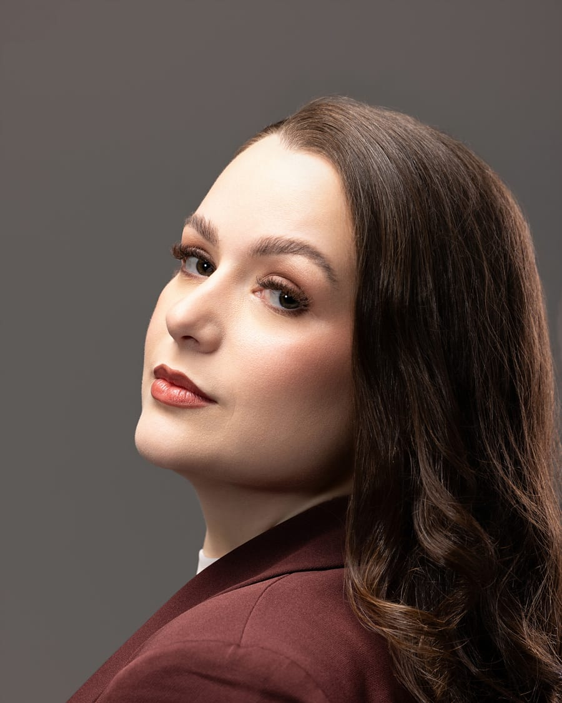
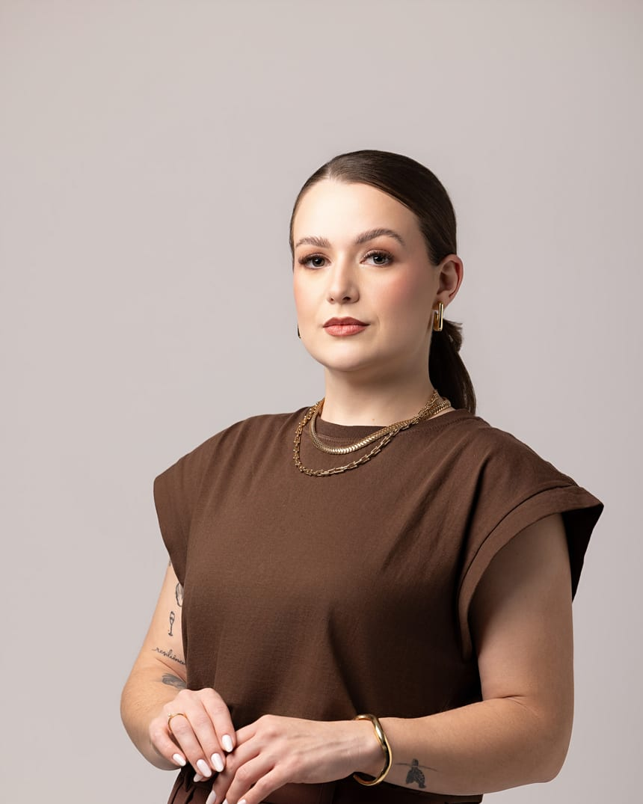

Pré-natal psicológico
Acompanhamento desde a pré-concepção até o puerpério, para viver a gestação com mais segurança e menos ansiedade.
Falar no WhatsAppPsicologia Perinatal
aqui eu vejo
A sua história, os seus sonhos. Um acompanhamento leve, livre da culpa e da sobrecarga, do pré-natal ao puerpério.


Sobre mim
prazer,
Durante a graduação em Psicologia, eu já sabia que queria atuar na área hospitalar. Mas foi no encontro com gestantes, mães e famílias que descobri onde, de fato, estava o meu propósito.
Há 10 anos, acompanho mulheres em diferentes momentos de suas vidas — e, ao longo dessa trajetória, fui me aproximando cada vez mais do universo da maternidade. Meu primeiro trabalho foi na área hospitalar, onde atuei nos diferentes setores materno-infantis e pude conhecer de perto as muitas faces da gestação, do parto, do nascimento e do puerpério.
Foi essa experiência que me levou a buscar especialização em Psicologia Perinatal e Psicologia da Saúde e Hospitalar e a compreender, cada vez mais, que cuidar de uma mãe também é cuidar de toda uma família.
Escolhi a Psicologia Perinatal porque acredito que a maternidade não precisa ser vivida em silêncio, culpa ou solidão. Existe espaço para o amor e para o cansaço, para a felicidade e para o medo, para a realização e para a ambivalência. E acredito que cada mulher merece ser acolhida em tudo aquilo que sente — sem julgamentos e sem precisar corresponder à imagem da “mãe perfeita”.
Hoje, atuo de forma independente, podendo oferecer um acompanhamento construído com escuta, conhecimento técnico e, principalmente, respeito pela história e pelo momento de cada mulher.
E, antes de ser psicóloga, eu também sou a Gi: tenho dois cachorros, o Thor e o Bartolomeu, adoro jogar beach tennis, viajar, conhecer lugares novos e, se tiver um bom vinho no caminho, melhor ainda. 😊
Porque acredito que o cuidado também acontece quando conseguimos enxergar a pessoa para além do papel que ela exerce.
Meu trabalho é cuidar da mulher que existe por trás da mãe.
Para mães
como posso
te acompanhar
Acompanhamento desde a pré-concepção até o puerpério, para viver a gestação com mais segurança e menos ansiedade.
Falar no WhatsAppUm espaço só seu para cuidar da sua saúde mental na maternidade, sem culpa e sem sobrecarga.
Falar no WhatsAppChega de achar que não dá pra viver bem da psicologia — dá sim, e eu te mostro o caminho.
Para psicólogas e estudantes
Formação e mentoria
Do primeiro atendimento à autonomia profissional — o caminho que eu trilhei, agora com você.
Formação completa para atuar com segurança no acompanhamento psicológico do pré-natal ao puerpério.
Mentoria para psicólogas que querem se especializar e atuar com autonomia no pré-natal psicológico.
Mentoria para psicólogas conquistarem autonomia e liberdade financeira com a psicologia.
No Instagram
Os temas que acompanho — do cuidado no pré-natal ao luto perinatal.